ProjectionStrategy¶
-
class
ProjectionStrategy(*args)¶ Base class for the evaluation strategies of the approximation coefficients.
- Available constructors:
- ProjectionStrategy(projectionStrategy)
Parameters: - projectionStrategy :
ProjectionStrategy A projection strategy which is a
LeastSquaresStrategyor anIntegrationStrategy.
Notes
Consider 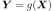 with 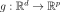, 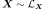 and
 with finite variance:
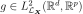.
with finite variance:
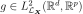.The functional chaos expansion approximates
using an isoprobabilistic
transformation T and an orthonormal multivariate basis 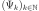
of 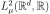. See FunctionalChaosAlgorithmto get more details.The meta model of
 , based on the functional chaos decomposition of
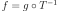 writes:
, based on the functional chaos decomposition of
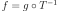 writes: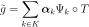
where K is a non empty finite set of indices, whose cardinality is denoted by P.
We detail the case where 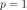.
The vector 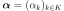 is equivalently defined by:
(1)¶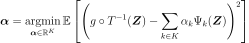
and:
(2)¶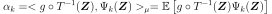
where 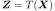 and the mean 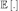 is evaluated with respect to the measure
 .
.It corresponds to two points of view:
- relation (1) means that the coefficients
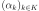 minimize the quadratic error between the model and
the polynomial approximation. Use
LeastSquaresStrategy. - relation (2) means that 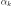 is the scalar product of the
model with the k-th element of the orthonormal basis .
Use
IntegrationStrategy.
In both cases, the mean is approximated by a linear quadrature formula:
(3)¶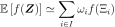
where f is a function in 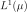.
In the approximation (3), the set I, the points
 and the weights
and the weights  are evaluated from different methods
implemented in the
are evaluated from different methods
implemented in the WeightedExperiment.The convergence criterion used to evaluate the coefficients is based on the residual value defined in the
FunctionalChaosAlgorithm.Attributes: thisownThe membership flag
Methods
getClassName()Accessor to the object’s name. getCoefficients()Accessor to the coefficients. getExperiment()Accessor to the experiments. getId()Accessor to the object’s id. getImplementation(*args)Accessor to the underlying implementation. getInputSample()Accessor to the input sample. getMeasure()Accessor to the measure. getName()Accessor to the object’s name. getOutputSample()Accessor to the output sample. getRelativeError()Accessor to the relative error. getResidual()Accessor to the residual. getWeights()Accessor to the weights. setExperiment(weightedExperiment)Accessor to the design of experiment. setInputSample(inputSample)Accessor to the input sample. setMeasure(measure)Accessor to the measure. setName(name)Accessor to the object’s name. setOutputSample(outputSample)Accessor to the output sample. setWeights(weights)Accessor to the weights. computeCoefficients -
__init__(*args)¶ Initialize self. See help(type(self)) for accurate signature.
-
getClassName()¶ Accessor to the object’s name.
Returns: - class_name : str
The object class name (object.__class__.__name__).
-
getExperiment()¶ Accessor to the experiments.
Returns: - exp :
WeightedExperiment Weighted experiment used to evaluate the coefficients.
- exp :
-
getId()¶ Accessor to the object’s id.
Returns: - id : int
Internal unique identifier.
-
getImplementation(*args)¶ Accessor to the underlying implementation.
Returns: - impl : Implementation
The implementation class.
-
getMeasure()¶ Accessor to the measure.
Returns: - mu : Distribution
Measure
defining the scalar product.
-
getName()¶ Accessor to the object’s name.
Returns: - name : str
The name of the object.
-
getRelativeError()¶ Accessor to the relative error.
Returns: - e : float
Relative error.
-
getResidual()¶ Accessor to the residual.
Returns: - er : float
Residual error.
-
setExperiment(weightedExperiment)¶ Accessor to the design of experiment.
Parameters: - exp :
WeightedExperiment Weighted design of experiment.
- exp :
-
setMeasure(measure)¶ Accessor to the measure.
Parameters: - m : Distribution
Measure
defining the scalar product.
-
setName(name)¶ Accessor to the object’s name.
Parameters: - name : str
The name of the object.
-
setWeights(weights)¶ Accessor to the weights.
Parameters: - w :
Point Weights of the design of experiments.
- w :
-
thisown¶ The membership flag